A plot is produced which allows comprehensive presentation of data precision and its dispersion around a central value as well as illustration of a kernel density estimate, histogram and/or dot plot of the dose values.
plot_AbanicoPlot(
data,
na.rm = TRUE,
log.z = TRUE,
z.0 = "mean.weighted",
dispersion = "qr",
plot.ratio = 0.75,
rotate = FALSE,
mtext,
summary,
summary.pos,
summary.method = "MCM",
legend,
legend.pos,
stats,
rug = FALSE,
kde = TRUE,
hist = FALSE,
dots = FALSE,
boxplot = FALSE,
y.axis = TRUE,
error.bars = FALSE,
bar,
bar.col,
polygon.col,
line,
line.col,
line.lty,
line.label,
grid.col,
frame = 1,
bw = "SJ",
interactive = FALSE,
...
)Arguments
- data
data.frame or RLum.Results object (required): for
data.frametwo columns: De (data[,1]) and De error (data[,2]). To plot several data sets in one plot the data sets must be provided aslist, e.g.list(data.1, data.2).- na.rm
logical (with default): exclude NA values from the data set prior to any further operations.
- log.z
logical (with default): Option to display the z-axis in logarithmic scale. Default is
TRUE.- z.0
character or numeric: User-defined central value, used for centring of data. One out of
"mean","mean.weighted"and"median"or a numeric value (not its logarithm). Default is"mean.weighted".- dispersion
character (with default): measure of dispersion, used for drawing the scatter polygon. One out of
"qr"(quartile range),"pnn"(symmetric percentile range withnnthe lower percentile, e.g."p05"depicting the range between 5 and 95 %),"sd"(standard deviation) and"2sd"(2 standard deviations),
The default is
"qr". Note that"sd"and"2sd"are only meaningful in combination with"z.0 = 'mean'"because the unweighted mean is used to centre the polygon.- plot.ratio
numeric: Relative space, given to the radial versus the cartesian plot part, default is
0.75.- rotate
logical: Option to turn the plot by 90 degrees.
- mtext
character: additional text below the plot title.
- summary
character (optional): add statistic measures of centrality and dispersion to the plot. Can be one or more of several keywords. See details for available keywords. Results differ depending on the log-option for the z-scale (see details).
- summary.pos
numeric or character (with default): optional position coordinates or keyword (e.g.
"topright") for the statistical summary. Alternatively, the keyword"sub"may be specified to place the summary below the plot header. However, this latter option in only possible ifmtextis not used.- summary.method
character (with default): keyword indicating the method used to calculate the statistic summary. One out of
"unweighted","weighted"and"MCM".
See calc_Statistics for details.
- legend
character vector (optional): legend content to be added to the plot.
- legend.pos
numeric or character (with default): optional position coordinates or keyword (e.g.
"topright") for the legend to be plotted.- stats
character: additional labels of statistically important values in the plot. One or more out of the following:
"min","max","median".
- rug
logical: Option to add a rug to the KDE part, to indicate the location of individual values.
- kde
logical: Option to add a KDE plot to the dispersion part, default is
TRUE.- hist
logical: Option to add a histogram to the dispersion part. Only meaningful when not more than one data set is plotted.
- dots
logical: Option to add a dot plot to the dispersion part. If number of dots exceeds space in the dispersion part, a square indicates this.
- boxplot
logical: Option to add a boxplot to the dispersion part, default is
FALSE.- y.axis
logical: Option to hide standard y-axis labels and show 0 only. Useful for data with small scatter. If you want to suppress the y-axis entirely please use
yaxt == 'n'(the standard graphics::par setting) instead.- error.bars
logical: Option to show De-errors as error bars on De-points. Useful in combination with
y.axis = FALSE, bar.col = "none".- bar
numeric (with default): option to add one or more dispersion bars (i.e., bar showing the 2-sigma range) centred at the defined values. By default a bar is drawn according to
"z.0". To omit the bar set"bar = FALSE".- bar.col
character or numeric (with default): colour of the dispersion bar. Default is
"grey60".- polygon.col
character or numeric (with default): colour of the polygon showing the data scatter. Sometimes this polygon may be omitted for clarity. To disable it use
FALSEorpolygon = FALSE. Default is"grey80".- line
numeric: numeric values of the additional lines to be added.
- line.col
- line.lty
integer: line type of additional lines
- line.label
character: labels for the additional lines.
- grid.col
character or numeric (with default): colour of the grid lines (originating at
[0,0]and stretching to the z-scale). To disable grid lines useFALSE. Default is"grey".- frame
numeric (with default): option to modify the plot frame type. Can be one out of
0(no frame),1(frame originates at 0,0 and runs along min/max isochrons),2(frame embraces the 2-sigma bar),3(frame embraces the entire plot as a rectangle).
Default is
1.- bw
character (with default): bin-width for KDE, choose a numeric value for manual setting.
- interactive
logical (with default): create an interactive abanico plot (requires the
'plotly'package)- ...
Further plot arguments to pass (see graphics::plot.default). Supported are:
main,sub,ylab,xlab,zlab,zlim,ylim,cex,lty,lwd,pch,col,tck,tcl,at,breaks.xlabmust be a vector of length two, specifying the upper and lower x-axes labels.
Value
returns a plot object and, optionally, a list with plot calculus data.
Details
The Abanico Plot is a combination of the classic Radial Plot
(plot_RadialPlot) and a kernel density estimate plot (e.g
plot_KDE). It allows straightforward visualisation of data precision,
error scatter around a user-defined central value and the combined
distribution of the values, on the actual scale of the measured data (e.g.
seconds, equivalent dose, years). The principle of the plot is shown in
Galbraith & Green (1990). The function authors are thankful for the
thought provoking figure in this article.
The semi circle (z-axis) of the classic Radial Plot is bent to a straight line here, which actually is the basis for combining this polar (radial) part of the plot with any other Cartesian visualisation method (KDE, histogram, PDF and so on). Note that the plot allows displaying two measures of distribution. One is the 2-sigma bar, which illustrates the spread in value errors, and the other is the polygon, which stretches over both parts of the Abanico Plot (polar and Cartesian) and illustrates the actual spread in the values themselves.
Since the 2-sigma-bar is a polygon, it can be (and is) filled with shaded
lines. To change density (lines per inch, default is 15) and angle (default
is 45 degrees) of the shading lines, specify these parameters. See
?polygon() for further help.
The Abanico Plot supports other than the weighted mean as measure of
centrality. When it is obvious that the data
is not (log-)normally distributed, the mean (weighted or not) cannot be a
valid measure of centrality and hence central dose. Accordingly, the median
and the weighted median can be chosen as well to represent a proper measure
of centrality (e.g. centrality = "median.weighted"). Also
user-defined numeric values (e.g. from the central age model) can be used if
this appears appropriate.
The proportion of the polar part and the cartesian part of the Abanico Plot
can be modified for display reasons (plot.ratio = 0.75). By default,
the polar part spreads over 75 \
shows the KDE graph.
A statistic summary, i.e. a collection of statistic measures of centrality and dispersion (and further measures) can be added by specifying one or more of the following keywords:
"n"(number of samples)"mean"(mean De value)"median"(median of the De values)"sd.rel"(relative standard deviation in percent)"sd.abs"(absolute standard deviation)"se.rel"(relative standard error)"se.abs"(absolute standard error)"in.2s"(percent of samples in 2-sigma range)"kurtosis"(kurtosis)"skewness"(skewness)
Note that the input data for the statistic summary is sent to the function
calc_Statistics() depending on the log-option for the z-scale. If
"log.z = TRUE", the summary is based on the logarithms of the input
data. If "log.z = FALSE" the linearly scaled data is used.
Note as well, that "calc_Statistics()" calculates these statistic
measures in three different ways: unweighted, weighted and
MCM-based (i.e., based on Monte Carlo Methods). By default, the
MCM-based version is used. If you wish to use another method, indicate this
with the appropriate keyword using the argument summary.method.
The optional parameter layout allows to modify the entire plot more
sophisticated. Each element of the plot can be addressed and its properties
can be defined. This includes font type, size and decoration, colours and
sizes of all plot items. To infer the definition of a specific layout style
cf. get_Layout() or type e.g., for the layout type "journal"
get_Layout("journal"). A layout type can be modified by the user by
assigning new values to the list object.
It is possible for the z-scale to specify where ticks are to be drawn
by using the parameter at, e.g. at = seq(80, 200, 20), cf. function
documentation of axis. Specifying tick positions manually overrides a
zlim-definition.
Function version
0.1.17
How to cite
Dietze, M., Kreutzer, S., 2022. plot_AbanicoPlot(): Function to create an Abanico Plot.. Function version 0.1.17. In: Kreutzer, S., Burow, C., Dietze, M., Fuchs, M.C., Schmidt, C., Fischer, M., Friedrich, J., Mercier, N., Philippe, A., Riedesel, S., Autzen, M., Mittelstrass, D., Gray, H.J., Galharret, J., 2022. Luminescence: Comprehensive Luminescence Dating Data Analysis. R package version 0.9.19. https://CRAN.R-project.org/package=Luminescence
References
Galbraith, R. & Green, P., 1990. Estimating the component ages in a finite mixture. International Journal of Radiation Applications and Instrumentation. Part D. Nuclear Tracks and Radiation Measurements, 17 (3), 197-206.
Dietze, M., Kreutzer, S., Burow, C., Fuchs, M.C., Fischer, M., Schmidt, C., 2015. The abanico plot: visualising chronometric data with individual standard errors. Quaternary Geochronology. doi:10.1016/j.quageo.2015.09.003
See also
Examples
## load example data and recalculate to Gray
data(ExampleData.DeValues, envir = environment())
ExampleData.DeValues <- ExampleData.DeValues$CA1
## plot the example data straightforward
plot_AbanicoPlot(data = ExampleData.DeValues)
## now with linear z-scale
plot_AbanicoPlot(data = ExampleData.DeValues,
log.z = FALSE)
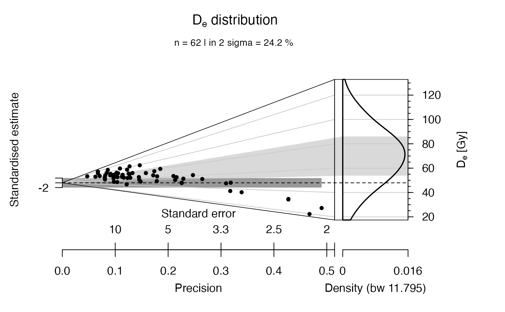
## now with output of the plot parameters
plot1 <- plot_AbanicoPlot(data = ExampleData.DeValues,
output = TRUE)
str(plot1)
#> List of 10
#> $ xlim : num [1:2] 0 16.1
#> $ ylim : num [1:2] -36.8 15.9
#> $ zlim : num [1:2] 17.4 132.9
#> $ polar.box : num [1:4] 0 16.1 -20.5 12.2
#> $ cartesian.box: num [1:4] 16.6 20.4 -20.5 12.2
#> $ plot.ratio : num 0.788
#> $ data :List of 1
#> ..$ :'data.frame': 62 obs. of 10 variables:
#> .. ..$ De : num [1:62] 19.7 26.2 31.5 31.9 36.2 ...
#> .. ..$ error : num [1:62] 2.14 2.04 2.34 2.34 2.95 3.15 8.22 3.23 4.43 4.43 ...
#> .. ..$ z : num [1:62] 2.98 3.27 3.45 3.46 3.59 ...
#> .. ..$ se : num [1:62] 0.1086 0.0779 0.0743 0.0732 0.0816 ...
#> .. ..$ z.central : num [1:62] 4.13 4.13 4.13 4.13 4.13 ...
#> .. ..$ precision : num [1:62] 9.21 12.84 13.45 13.65 12.26 ...
#> .. ..$ std.estimate : num [1:62] -10.58 -11.1 -9.15 -9.09 -6.64 ...
#> .. ..$ std.estimate.plot: num [1:62] -10.58 -11.1 -9.15 -9.09 -6.64 ...
#> .. ..$ weights : num [1:62] 0.0161 0.0161 0.0161 0.0161 0.0161 ...
#> .. ..$ data.in.2s : logi [1:62] FALSE FALSE FALSE FALSE FALSE FALSE ...
#> $ data.global :'data.frame': 62 obs. of 10 variables:
#> ..$ De : num [1:62] 19.7 26.2 31.5 31.9 36.2 ...
#> ..$ error : num [1:62] 2.14 2.04 2.34 2.34 2.95 3.15 8.22 3.23 4.43 4.43 ...
#> ..$ z : num [1:62] 2.98 3.27 3.45 3.46 3.59 ...
#> ..$ se : num [1:62] 0.1086 0.0779 0.0743 0.0732 0.0816 ...
#> ..$ z.central : num [1:62] 4.13 4.13 4.13 4.13 4.13 ...
#> ..$ precision : num [1:62] 9.21 12.84 13.45 13.65 12.26 ...
#> ..$ std.estimate : num [1:62] -10.58 -11.1 -9.15 -9.09 -6.64 ...
#> ..$ std.estimate.plot: num [1:62] -10.58 -11.1 -9.15 -9.09 -6.64 ...
#> ..$ weights : num [1:62] 0.0161 0.0161 0.0161 0.0161 0.0161 ...
#> ..$ data set : num [1:62] 1 1 1 1 1 1 1 1 1 1 ...
#> $ KDE :List of 1
#> ..$ : num [1:514, 1:2] 2.86 2.86 2.86 2.87 2.87 ...
#> $ par :List of 66
#> ..$ xlog : logi FALSE
#> ..$ ylog : logi FALSE
#> ..$ adj : num 0.5
#> ..$ ann : logi TRUE
#> ..$ ask : logi FALSE
#> ..$ bg : chr "transparent"
#> ..$ bty : chr "o"
#> ..$ cex : num 1
#> ..$ cex.axis : num 1
#> ..$ cex.lab : num 1
#> ..$ cex.main : num 1.2
#> ..$ cex.sub : num 1
#> ..$ col : chr "black"
#> ..$ col.axis : chr "black"
#> ..$ col.lab : chr "black"
#> ..$ col.main : chr "black"
#> ..$ col.sub : chr "black"
#> ..$ crt : num 0
#> ..$ err : int 0
#> ..$ family : chr ""
#> ..$ fg : chr "black"
#> ..$ fig : num [1:4] 0 1 0 1
#> ..$ fin : num [1:2] 6.67 6.67
#> ..$ font : int 1
#> ..$ font.axis: int 1
#> ..$ font.lab : int 1
#> ..$ font.main: int 2
#> ..$ font.sub : int 1
#> ..$ lab : int [1:3] 5 5 7
#> ..$ las : int 0
#> ..$ lend : chr "round"
#> ..$ lheight : num 1
#> ..$ ljoin : chr "round"
#> ..$ lmitre : num 10
#> ..$ lty : chr "solid"
#> ..$ lwd : num 1
#> ..$ mai : num [1:4] 0.9 0.9 0.7 1.4
#> ..$ mar : num [1:4] 4.5 4.5 3.5 7
#> ..$ mex : num 1
#> ..$ mfcol : int [1:2] 1 1
#> ..$ mfg : int [1:4] 1 1 1 1
#> ..$ mfrow : int [1:2] 1 1
#> ..$ mgp : num [1:3] 3 1 0
#> ..$ mkh : num 0.001
#> ..$ new : logi FALSE
#> ..$ oma : num [1:4] 0 0 0 0
#> ..$ omd : num [1:4] 0 1 0 1
#> ..$ omi : num [1:4] 0 0 0 0
#> ..$ pch : int 1
#> ..$ pin : num [1:2] 4.37 5.07
#> ..$ plt : num [1:4] 0.135 0.79 0.135 0.895
#> ..$ ps : int 12
#> ..$ pty : chr "m"
#> ..$ smo : num 1
#> ..$ srt : num 0
#> ..$ tck : num NA
#> ..$ tcl : num -0.5
#> ..$ usr : num [1:4] 0 20.4 -36.8 15.9
#> ..$ xaxp : num [1:3] 0 20 4
#> ..$ xaxs : chr "r"
#> ..$ xaxt : chr "s"
#> ..$ xpd : logi TRUE
#> ..$ yaxp : num [1:3] -30 10 4
#> ..$ yaxs : chr "r"
#> ..$ yaxt : chr "s"
#> ..$ ylbias : num 0.2
plot1$zlim
#> [1] 17.41711 132.85700
## now with adjusted z-scale limits
plot_AbanicoPlot(data = ExampleData.DeValues,
zlim = c(10, 200))
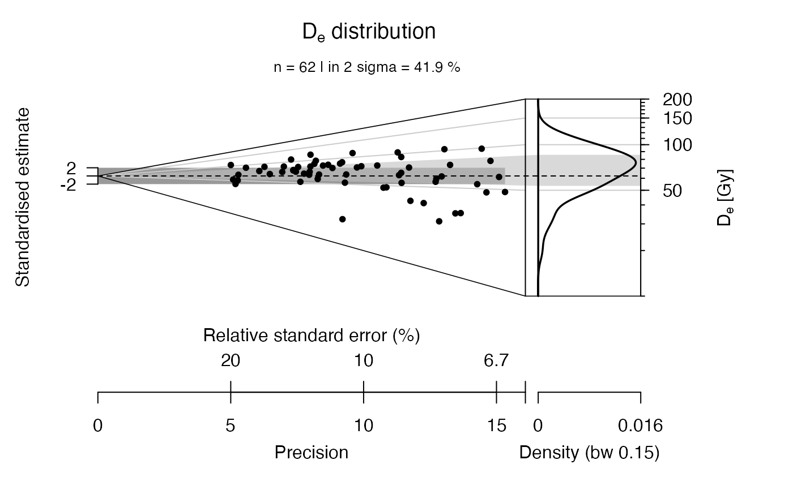
## now with adjusted x-scale limits
plot_AbanicoPlot(data = ExampleData.DeValues,
xlim = c(0, 20))
## now with rug to indicate individual values in KDE part
plot_AbanicoPlot(data = ExampleData.DeValues,
rug = TRUE)
## now with a smaller bandwidth for the KDE plot
plot_AbanicoPlot(data = ExampleData.DeValues,
bw = 0.04)
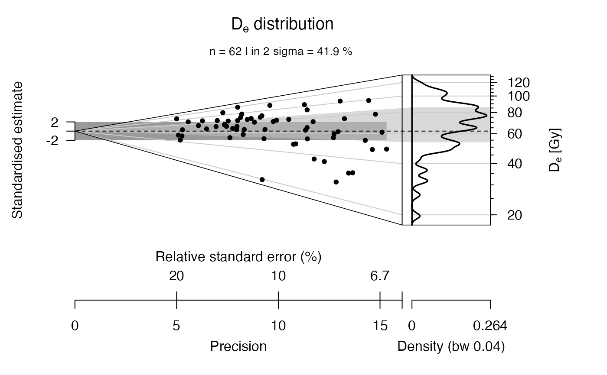
## now with a histogram instead of the KDE plot
plot_AbanicoPlot(data = ExampleData.DeValues,
hist = TRUE,
kde = FALSE)
## now with a KDE plot and histogram with manual number of bins
plot_AbanicoPlot(data = ExampleData.DeValues,
hist = TRUE,
breaks = 20)
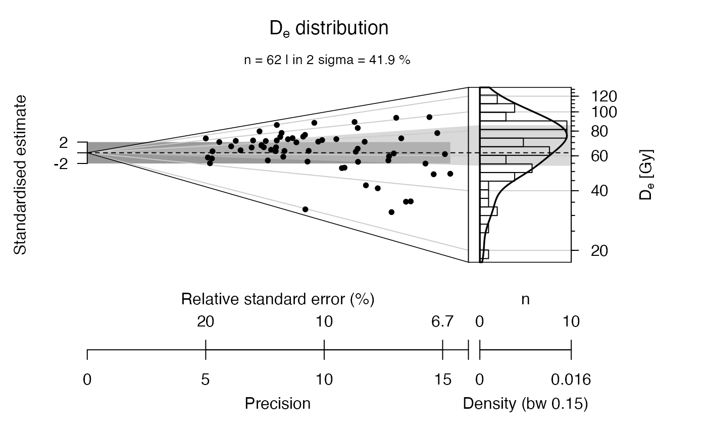
## now with a KDE plot and a dot plot
plot_AbanicoPlot(data = ExampleData.DeValues,
dots = TRUE)
## now with user-defined plot ratio
plot_AbanicoPlot(data = ExampleData.DeValues,
plot.ratio = 0.5)
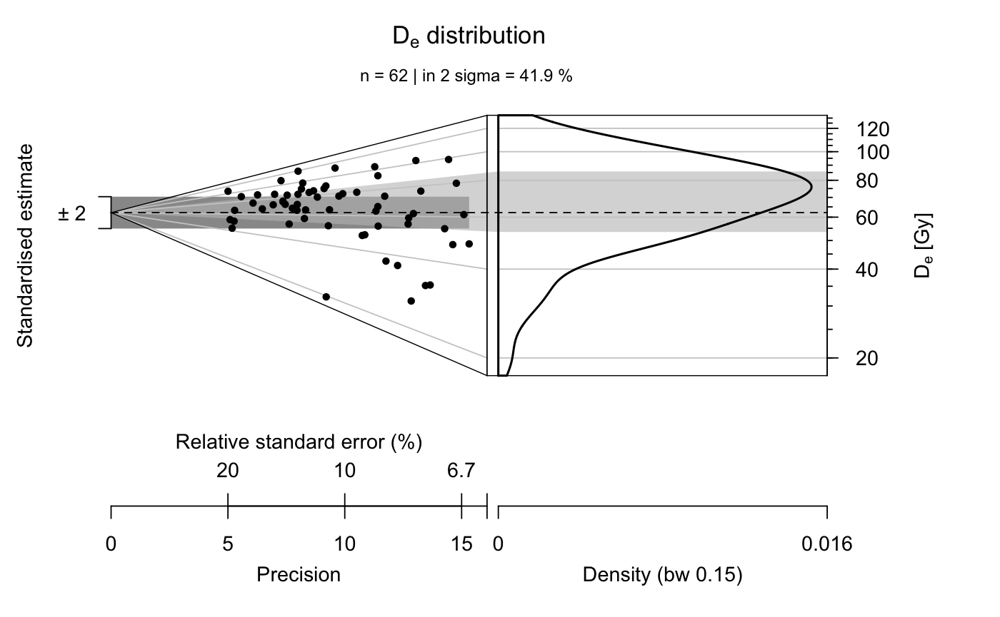
## now with user-defined central value
plot_AbanicoPlot(data = ExampleData.DeValues,
z.0 = 70)
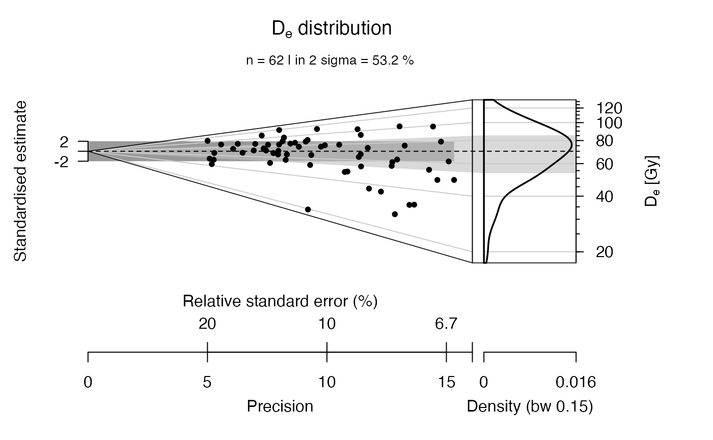
## now with median as central value
plot_AbanicoPlot(data = ExampleData.DeValues,
z.0 = "median")
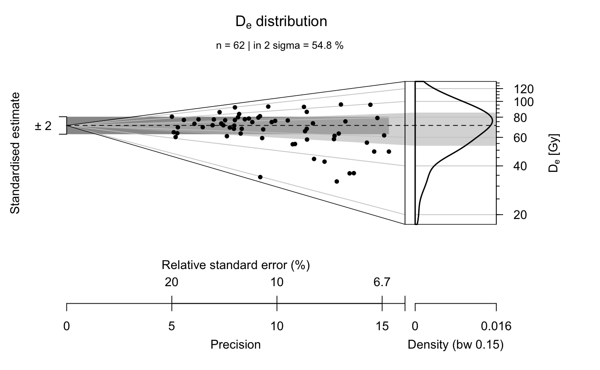
## now with the 17-83 percentile range as definition of scatter
plot_AbanicoPlot(data = ExampleData.DeValues,
z.0 = "median",
dispersion = "p17")
 ## now with user-defined green line for minimum age model
CAM <- calc_CentralDose(ExampleData.DeValues,
plot = FALSE)
#>
#> [calc_CentralDose]
#>
#> ----------- meta data ----------------
#> n: 62
#> log: TRUE
#> ----------- dose estimate ------------
#> abs. central dose: 65.71
#> abs. SE: 3.05
#> rel. SE [%]: 4.65
#> ----------- overdispersion -----------
#> abs. OD: 22.79
#> abs. SE: 2.27
#> OD [%]: 34.69
#> SE [%]: 3.46
#> -------------------------------------
#>
plot_AbanicoPlot(data = ExampleData.DeValues,
line = CAM,
line.col = "darkgreen",
line.label = "CAM")
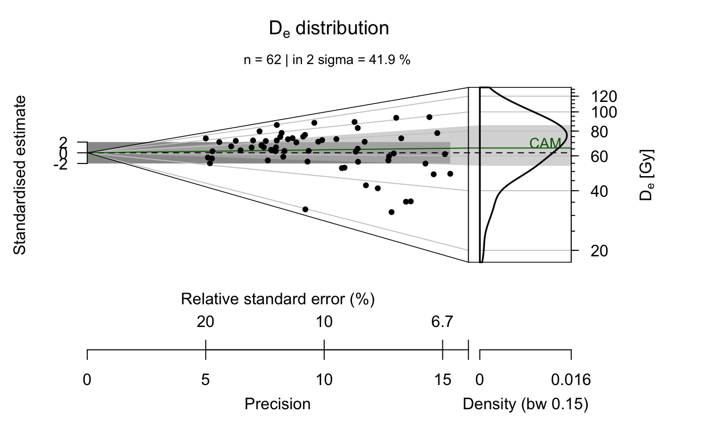
## now create plot with legend, colour, different points and smaller scale
plot_AbanicoPlot(data = ExampleData.DeValues,
legend = "Sample 1",
col = "tomato4",
bar.col = "peachpuff",
pch = "R",
cex = 0.8)
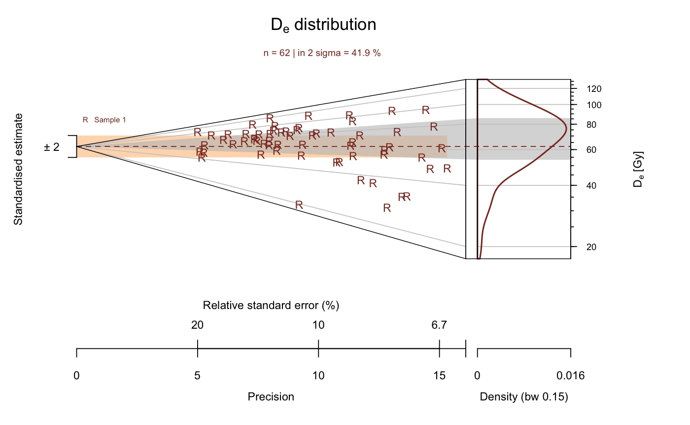
## now without 2-sigma bar, polygon, grid lines and central value line
plot_AbanicoPlot(data = ExampleData.DeValues,
bar.col = FALSE,
polygon.col = FALSE,
grid.col = FALSE,
y.axis = FALSE,
lwd = 0)
## now with direct display of De errors, without 2-sigma bar
plot_AbanicoPlot(data = ExampleData.DeValues,
bar.col = FALSE,
ylab = "",
y.axis = FALSE,
error.bars = TRUE)
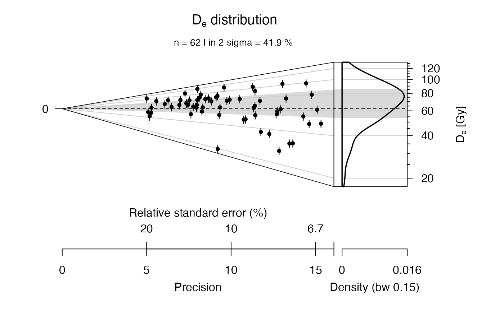
## now with user-defined axes labels
plot_AbanicoPlot(data = ExampleData.DeValues,
xlab = c("Data error (%)",
"Data precision"),
ylab = "Scatter",
zlab = "Equivalent dose [Gy]")
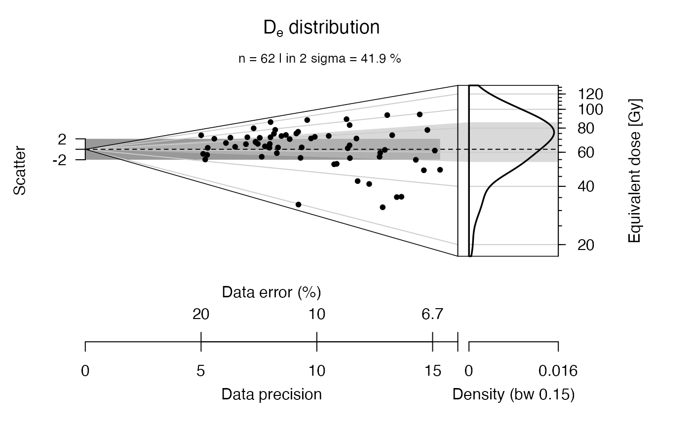
## now with minimum, maximum and median value indicated
plot_AbanicoPlot(data = ExampleData.DeValues,
stats = c("min", "max", "median"))
## now with a brief statistical summary as subheader
plot_AbanicoPlot(data = ExampleData.DeValues,
summary = c("n", "in.2s"))
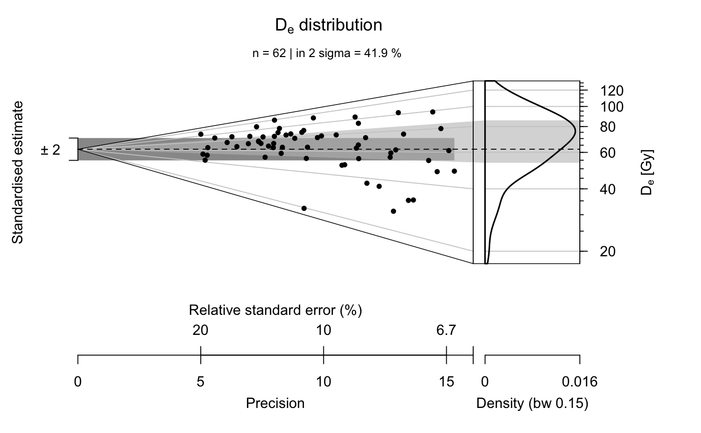
## now with another statistical summary
plot_AbanicoPlot(data = ExampleData.DeValues,
summary = c("mean.weighted", "median"),
summary.pos = "topleft")
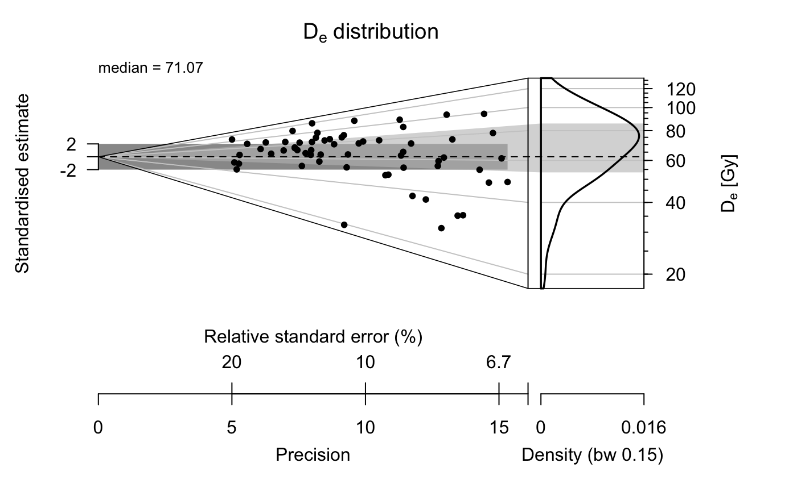
## now a plot with two 2-sigma bars for one data set
plot_AbanicoPlot(data = ExampleData.DeValues,
bar = c(30, 100))
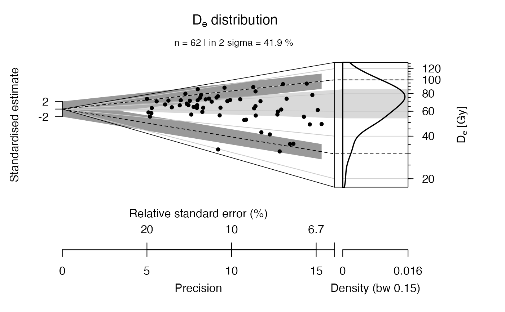
## now the data set is split into sub-groups, one is manipulated
data.1 <- ExampleData.DeValues[1:30,]
data.2 <- ExampleData.DeValues[31:62,] * 1.3
## now a common dataset is created from the two subgroups
data.3 <- list(data.1, data.2)
## now the two data sets are plotted in one plot
plot_AbanicoPlot(data = data.3)
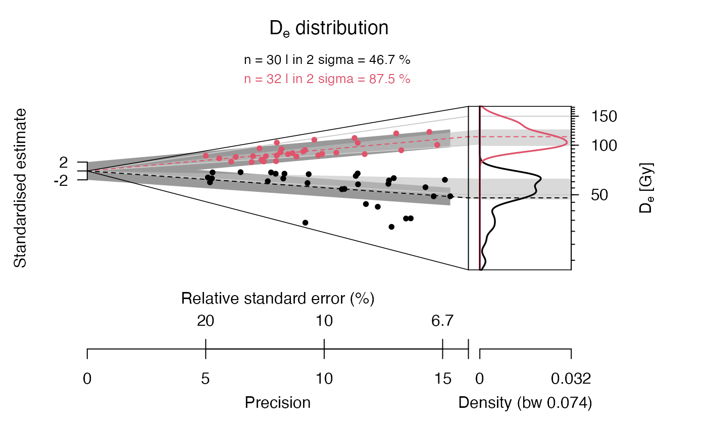
## now with some graphical modification
plot_AbanicoPlot(data = data.3,
z.0 = "median",
col = c("steelblue4", "orange4"),
bar.col = c("steelblue3", "orange3"),
polygon.col = c("steelblue1", "orange1"),
pch = c(2, 6),
angle = c(30, 50),
summary = c("n", "in.2s", "median"))
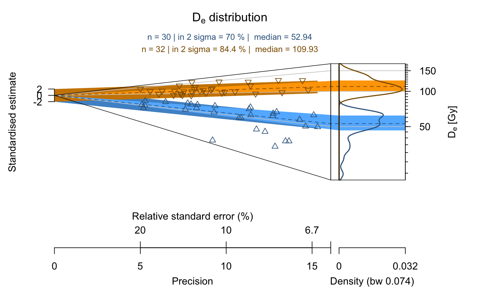
## create Abanico plot with predefined layout definition
plot_AbanicoPlot(data = ExampleData.DeValues,
layout = "journal")
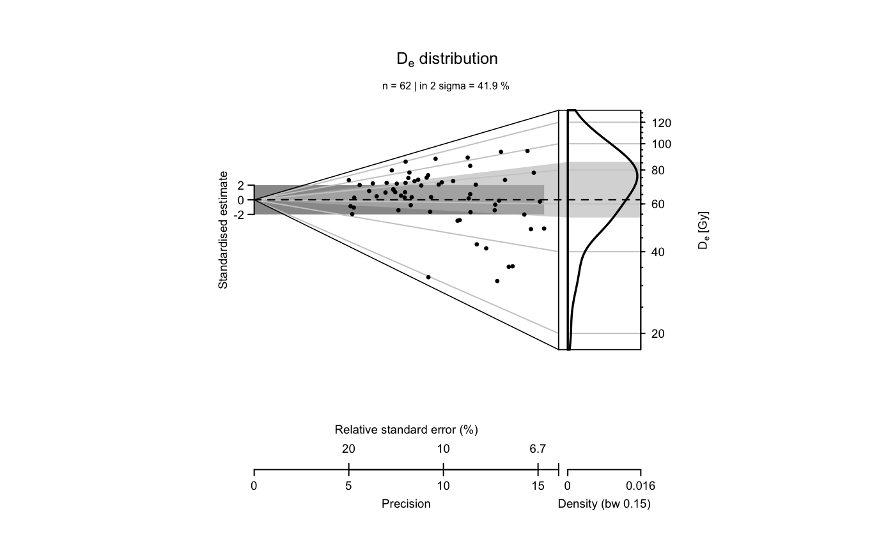
## now with predefined layout definition and further modifications
plot_AbanicoPlot(data = data.3,
z.0 = "median",
layout = "journal",
col = c("steelblue4", "orange4"),
bar.col = adjustcolor(c("steelblue3", "orange3"),
alpha.f = 0.5),
polygon.col = c("steelblue3", "orange3"))
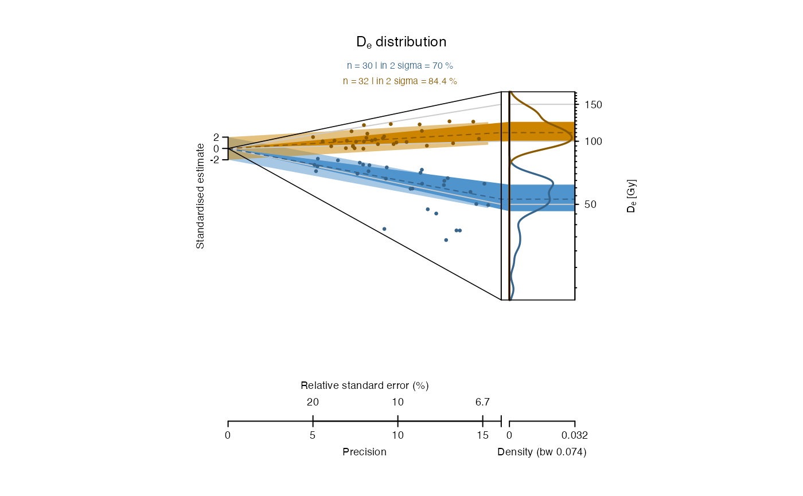
## for further information on layout definitions see documentation
## of function get_Layout()
## now with manually added plot content
## create empty plot with numeric output
AP <- plot_AbanicoPlot(data = ExampleData.DeValues,
pch = NA,
output = TRUE)
## identify data in 2 sigma range
in_2sigma <- AP$data[[1]]$data.in.2s
## restore function-internal plot parameters
par(AP$par)
## add points inside 2-sigma range
points(x = AP$data[[1]]$precision[in_2sigma],
y = AP$data[[1]]$std.estimate.plot[in_2sigma],
pch = 16)
## add points outside 2-sigma range
points(x = AP$data[[1]]$precision[!in_2sigma],
y = AP$data[[1]]$std.estimate.plot[!in_2sigma],
pch = 1)
## now with user-defined green line for minimum age model
CAM <- calc_CentralDose(ExampleData.DeValues,
plot = FALSE)
#>
#> [calc_CentralDose]
#>
#> ----------- meta data ----------------
#> n: 62
#> log: TRUE
#> ----------- dose estimate ------------
#> abs. central dose: 65.71
#> abs. SE: 3.05
#> rel. SE [%]: 4.65
#> ----------- overdispersion -----------
#> abs. OD: 22.79
#> abs. SE: 2.27
#> OD [%]: 34.69
#> SE [%]: 3.46
#> -------------------------------------
#>
plot_AbanicoPlot(data = ExampleData.DeValues,
line = CAM,
line.col = "darkgreen",
line.label = "CAM")
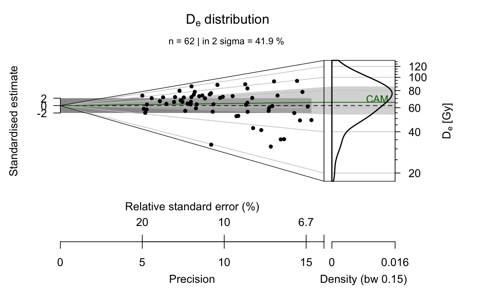
## now create plot with legend, colour, different points and smaller scale
plot_AbanicoPlot(data = ExampleData.DeValues,
legend = "Sample 1",
col = "tomato4",
bar.col = "peachpuff",
pch = "R",
cex = 0.8)
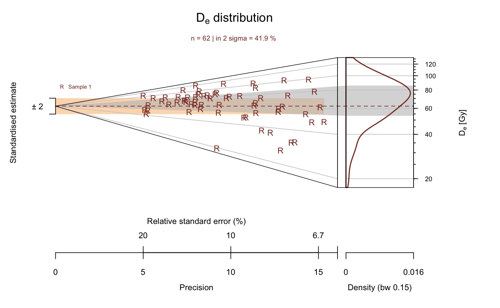
## now without 2-sigma bar, polygon, grid lines and central value line
plot_AbanicoPlot(data = ExampleData.DeValues,
bar.col = FALSE,
polygon.col = FALSE,
grid.col = FALSE,
y.axis = FALSE,
lwd = 0)
## now with direct display of De errors, without 2-sigma bar
plot_AbanicoPlot(data = ExampleData.DeValues,
bar.col = FALSE,
ylab = "",
y.axis = FALSE,
error.bars = TRUE)
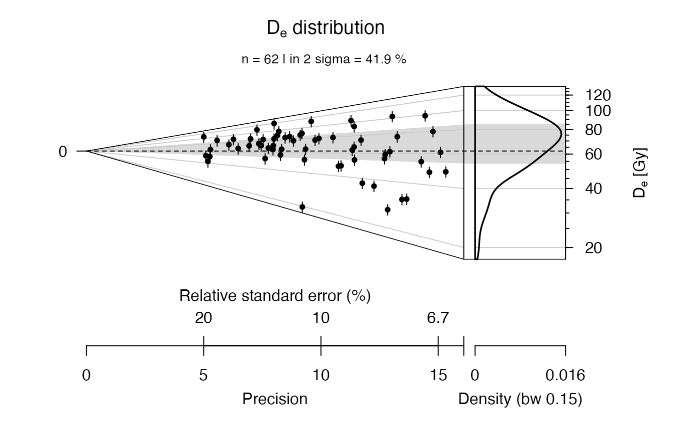
## now with user-defined axes labels
plot_AbanicoPlot(data = ExampleData.DeValues,
xlab = c("Data error (%)",
"Data precision"),
ylab = "Scatter",
zlab = "Equivalent dose [Gy]")
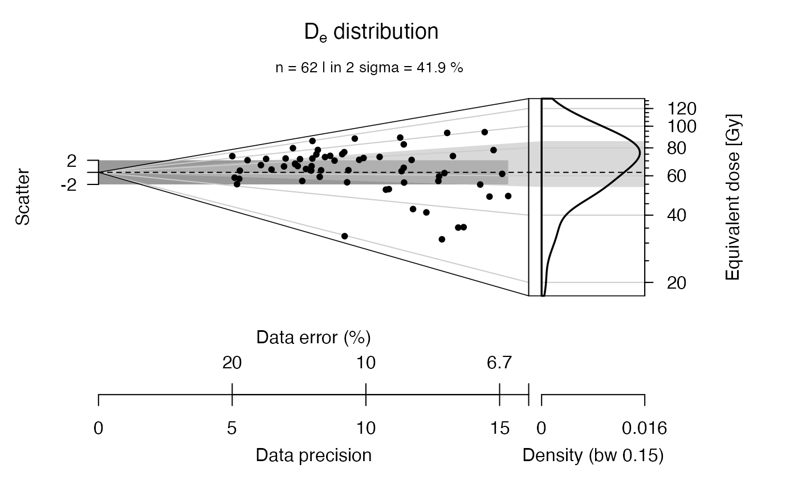
## now with minimum, maximum and median value indicated
plot_AbanicoPlot(data = ExampleData.DeValues,
stats = c("min", "max", "median"))
## now with a brief statistical summary as subheader
plot_AbanicoPlot(data = ExampleData.DeValues,
summary = c("n", "in.2s"))
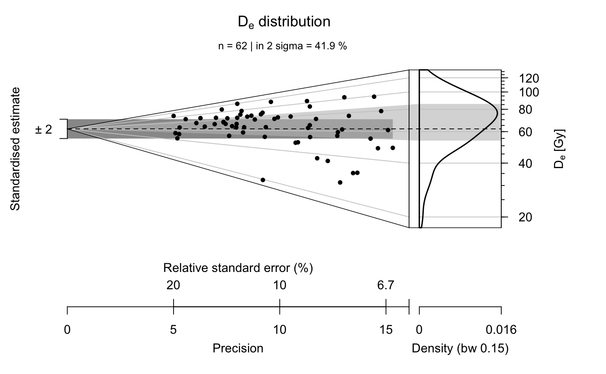
## now with another statistical summary
plot_AbanicoPlot(data = ExampleData.DeValues,
summary = c("mean.weighted", "median"),
summary.pos = "topleft")
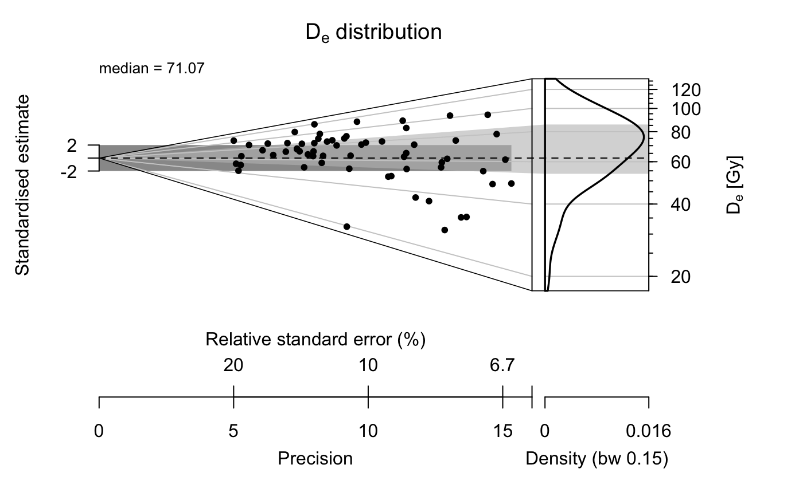
## now a plot with two 2-sigma bars for one data set
plot_AbanicoPlot(data = ExampleData.DeValues,
bar = c(30, 100))
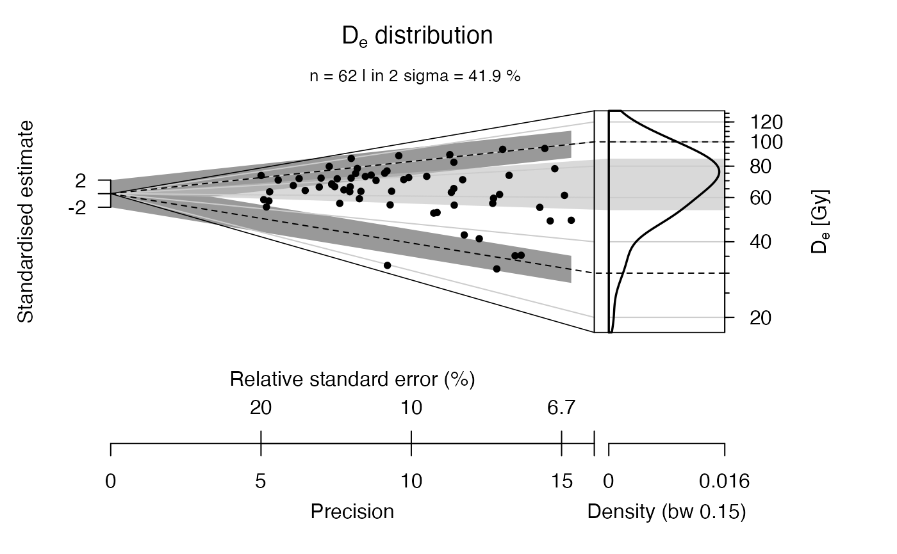
## now the data set is split into sub-groups, one is manipulated
data.1 <- ExampleData.DeValues[1:30,]
data.2 <- ExampleData.DeValues[31:62,] * 1.3
## now a common dataset is created from the two subgroups
data.3 <- list(data.1, data.2)
## now the two data sets are plotted in one plot
plot_AbanicoPlot(data = data.3)
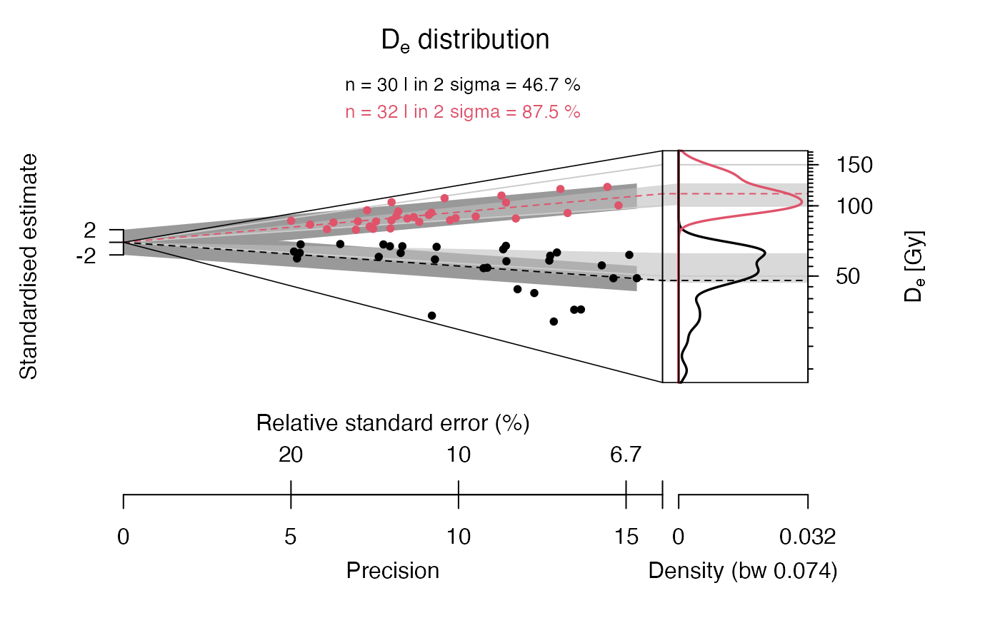
## now with some graphical modification
plot_AbanicoPlot(data = data.3,
z.0 = "median",
col = c("steelblue4", "orange4"),
bar.col = c("steelblue3", "orange3"),
polygon.col = c("steelblue1", "orange1"),
pch = c(2, 6),
angle = c(30, 50),
summary = c("n", "in.2s", "median"))
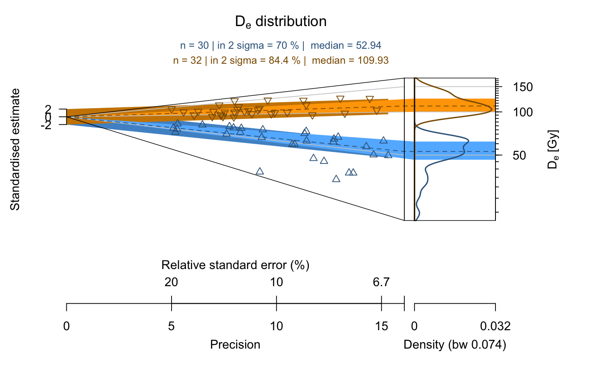
## create Abanico plot with predefined layout definition
plot_AbanicoPlot(data = ExampleData.DeValues,
layout = "journal")
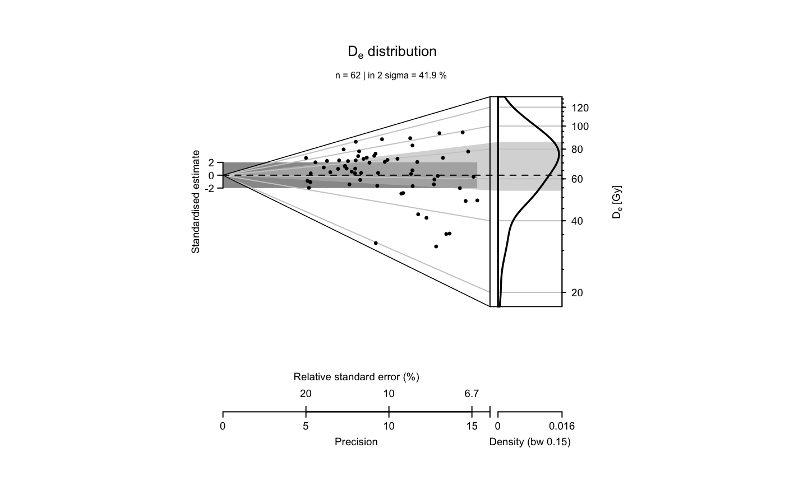
## now with predefined layout definition and further modifications
plot_AbanicoPlot(data = data.3,
z.0 = "median",
layout = "journal",
col = c("steelblue4", "orange4"),
bar.col = adjustcolor(c("steelblue3", "orange3"),
alpha.f = 0.5),
polygon.col = c("steelblue3", "orange3"))
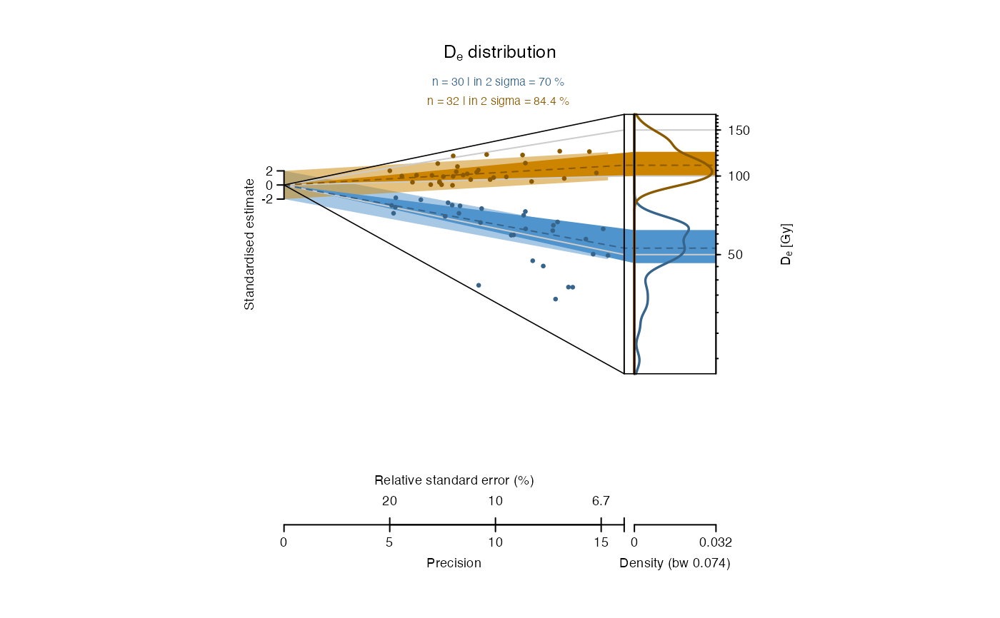
## for further information on layout definitions see documentation
## of function get_Layout()
## now with manually added plot content
## create empty plot with numeric output
AP <- plot_AbanicoPlot(data = ExampleData.DeValues,
pch = NA,
output = TRUE)
## identify data in 2 sigma range
in_2sigma <- AP$data[[1]]$data.in.2s
## restore function-internal plot parameters
par(AP$par)
## add points inside 2-sigma range
points(x = AP$data[[1]]$precision[in_2sigma],
y = AP$data[[1]]$std.estimate.plot[in_2sigma],
pch = 16)
## add points outside 2-sigma range
points(x = AP$data[[1]]$precision[!in_2sigma],
y = AP$data[[1]]$std.estimate.plot[!in_2sigma],
pch = 1)